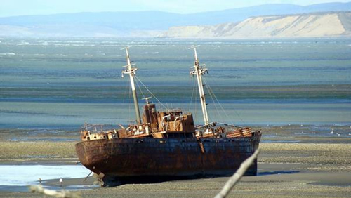

Real Chubut - Agencia de Noticias


12 rutas temáticas de la Argentina

Itinerarios. De las manzanas y los dinosaurios en Neuquén y Río Negro a la selva misionera o los gigantescos Seismiles en Catamarca, recorridos temáticos que cuentan historias y unen diversas geografías con pueblos y ciudades, parques y reservas. Para andar y disfrutar. En la imagen de portada, el Desdémona, parte de la Ruta de los Naufragios de Tierra del Fuego.
Si bien también hay rutas del vino en Salta, Tucumán, La Rioja, Neuquén y San Juan, entre otras provincias, este recorrido enológico alcanza su máxima expresión en Mendoza, una de las regiones productoras más importantes del mundo, con su capital como parte del selecto grupo “Great wine capitals”.
odega Salentein, en el Valle de Uco.
Con más de 100 bodegas en sus cuatro regiones vitivinícolas –Centro, Este, Valle de Uco y Sur–, Mendoza ofrece todo para el amante del vino: antiguas bodegas transformadas en museo –como La Rural–, otras con estructuras súper modernas e increíbles vistas a la montaña –Séptima, O. Fournier o Vistandes, entre otras–, alojamientos de lujo entre las viñas, spas con tratamientos especializados –Cavas Wine Lodge, Entre Cielos, Park Hyatt, etc.–, canchas de golf entre los viñedos –Tupungato Winelands, en el Valle de Uco, o Algodón Real Estate, en San Rafael– y hasta completas galerías de arte, como el espacio Killka de la bodega Salentein.
Desde vinos de altura como los de Terrazas de los Andes a propuestas que incluyen tours de aceite de oliva y almuerzos en pasos maridados con diferentes cepas, Mendoza ha desarrollado como ninguna otra el enoturismo. Se puede cabalgar, recorrer los viñedos en bicicleta, en autos antiguos o en carruajes, y hasta sobrevolarlos en un globo aerostático.
www.caminosdelvino.org.ar
De la Selva (Misiones)
Un circuito por el territorio de la milenaria cultura guaraní, entre la tierra colorada y el río Paraná, con ruinas jesuíticas, saltos de agua, estancias, hitos históricos y reservas naturales. Son 300 km entre Posadas y Puerto Iguazú, pasando por el Peñón de Teyú Cuaré ; Candelaria -donde recaló Manuel Belgrano en 1810 durante su expedición militar a Paraguay-; las Ruinas de San Ignacio y el yacimientos de piedras semipreciosas minas de Wanda, para culminar en las Cataratas del Iguazú.
Caminos por la tierra colorada de Misiones.
Un recorrido que invita constantemente a desviarse y probar los caminos ondulantes en la tierra colorada de Misiones, serranías verdes y arroyos, y que se combina con otros tres circuitos típicos de la zona: la Ruta de la Yerba Mate –que invita a conocer plantaciones, establecimientos productores de yerba, secaderos y el Museo del Mate–; la Ruta Jesuita –con las ruinas y el Parque Temático La Cruz, con su cruz de hierro de 82 metros de altura, entre otros sitios– y la huella Guaraní, a lo largo de la ruta provincial 15, entre El Soberbio y Fracan.
Las Ruinas de San Ignacio, en Misiones.
www.misiones.tur.ar
Ruta Azul (Chubut/Santa Cruz)
Grandes paisajes y una espectacular demostración de fauna, en un recorrido que sigue el curso de la Ruta Nacional 3 desde Camarones, en el sur de Chubut, hasta Río Gallegos, en el sudeste de Santa Cruz, y que bien podría llamarse “La ruta del mar”, porque casi todo el circuito va mirando al océano.
En Punta Tombo, cerca de Puerto Madryn, hay casi un millón de ejemplares de pingüinos de Magallanes.
Poco más de 1.000 km que unen sitios como los parques marinos Patagonia Austral –en el Cabo Dos Bahías, margen norte del Golfo San Jorge–, la Isla Pingüino –con la única reserva continental de pingüinos de Magallanes–, la reserva Makenke –en Puerto San Julián– y el Parque Nacional Monte León –al sur de Puerto Santa Cruz–, además de la ría de Puerto Deseado –que maravilló al mismísimo Charles Darwin–, el bosque petrificado Jaramillo y la playa y lobería de Rada Tilly, entre muchos otros otros. Un recorrido que permite avistar gran variedad de aves, lobos y elefantes marinos, toninas, delfines, orcas y ballenas, según la época, además de guanacos, choiques y liebres.
www.chubutpatagonia.gob.ar / www.santacruz.tur.ar
De las Pulperías (Pcia. de Buenos Aires)
San Antonio de Areco, San Andrés de Giles, San Pedro, Baradero, Navarro, Azul, Cañuelas… Son muchos los sitios de la Provincia de Buenos Aires en los que antiguas pulperías resisten el paso del tiempo y cuentan historias que vale la pena conocer, de cuando eran el centro del comercio de los pueblos –todo lo que se necesitaba estaba allí: comida, bebidas, velas, carbón, remedios– y el centro de la vida social, donde todos se encontraban a ponerse al tanto de las novedades o a jugar al truco con un vermú.
En la provincia de Buenos Aires se conservan numerosas pulperías.
Algunos ejemplos: el Almacén de Mogiardini en Paraje Barrientos, cerca de la laguna de Lobos, no lejos de La Protegida, en Navarro, donde también están La Media Luna y El Recreo. Pero hay muchas: San Gervasio, en Azul; Los Principios, Bessonart o San Martín, en San Antonio de Areco, Beladrich en San Pedro, El Torito en Baradero, y las “súper famosas”, como La Blanqueada, en San Antonio de Areco, que aparece en “Don Segundo Sombra” y fue declarada Monumento Histórico y convertida en museo. O la pulpería de Cacho, en Mercedes, construida en 1830 con su mostrador de estaño y madera y una gran salamandra.
www.pulperias.org / www.buenosaires.tur.ar
De las Estancias Jesuíticas (Córdoba)
Un circuito por el centro de la capital y cinco establecimientos rurales conforman el recorrido por el legado que dejó la orden religiosa de la Compañía de Jesús y por leyendas y vestigios de una buena parte de la historia del siglo XVII (los jesuitas llegaron a Córdoba en 1599 y fueron expulsados en 1767).
La Estancia de Alta Gracia, parte de la ruta jesuítica cordobesa.
El “Camino de las Estancias Jesuíticas” es un itinerario turístico cultural que suele iniciarse en la Manzana Jesuítica de Córdoba, un conjunto de edificios que incluye, entre otros, la Iglesia de la Compañía, el antiguo Rectorado de la Universidad Nacional de Córdoba, la Biblioteca Mayor y el Colegio Nacional de Monserrat.
En Colonia Caroya, a 46 km de la capital, está la Estancia de Caroya, primer establecimiento rural organizado por la orden, en 1616, que conserva su estructura colonial. El segundo núcleo productivo del sistema fue la Estancia de Jesús María, construida desde 1618 y que se encuentra al Noroeste de Jesús María. Otras son la Estancia de Santa Catalina, iniciada por los jesuitas a partir de 1622 y que cuenta con el mayor conjunto edificado por la Compañía fuera de Córdoba capital, declarado Monumento Histórico; la Estancia de Alta Gracia (1643), en el corazón de esa ciudad; y la de La Candelaria (de la Compañía a partir de 1683), en plenas sierras, 230 km al noroeste de la capital.
www.cordobaturismo.gov.ar
De los Seismiles (Catamarca)
De Tinogasta hacia el norte se abre uno de los circuitos más sorprendentes de la Argentina, ideal para amantes de escenarios vírgenes y naturaleza pura. Este recorrido por la Puna catamarqueña está enmarcado por 14 picos de más de 6.000 metros sobre el nivel del mar, casi en la frontera con Chile y con una combinación de pequeños pueblos y fantásticos paisajes.
El Ojos del Salado es la segunda cumbre más alta de América.
El camino transcurre por la ruta 60 hasta el Paso de San Francisco, punto cúlmine de una travesía que suele comenzar en Tinogasta o en Fiambalá y trepa la Cordillera. El primer gigante en aparecer es el monte Pissis, en la frontera entre Catamarca y La Rioja, que con 6.793 metros, es el volcán inactivo más alto del mundo y la tercera cumbre más alta de América luego del Aconcagua y del Ojos del Salado (6.893 m), otro protagonista de esta ruta. Tanto como los cerros De los Patos, Tres Cruces, Incahuasi o San Francisco, muy cerca de la ruta y del cruce.
El recorrido se funde con la Ruta del Adobe, entre Tinogasta y Fiambalá, testimonio de una arquitectura única.
www.turismocatamarca.gov.ar
De los naufragios (Tierra del Fuego)
Un proyecto que no fue presentado oficialmente aún, por lo que es un recorrido para hacer por cuenta propia, con buenos mapas y páginas que cuenten las historias. Una ruta más que interesante en la provincia más austral del país, que une restos de embarcaciones naufragadas en costas fueguinas y sitios donde ocurrieron famosos naufragios, entre historias de navegantes que desafiaron los mares más bravos, en sus aventuras por Tierra del Fuego.
Los restos del Desdémona, en las costas del cabo San Pablo.
El principal de estos testimonios es el del Desdémona, un carguero construido en Hamburgo en 1952 que quedó varado en las costas del cabo San Pablo, y hoy puede ser visitado cuando baja la marea. Otro naufragio famoso es el del vapor Sarmiento, que en 1912 dio contra las rocas de la costa del canal Beagle, frente a la estancia Remolino. Su casco oxidado se trasformó en un elemento característico, y restos recuperados se exhiben en museos de Ushuaia. O el Duchess of Albany, que una noche de invierno de 1893 terminó sus aventuras frente a las costas de la estancia Policarpo.
Muchos otros accidentes y naufragios, de galeones y carabelas a fragatas y barcos de guano, ocurrieron en Península Mitre, agreste y con paisajes impactantes. Se llega en helicóptero o con excursiones a caballo de varios días.
www.tierradelfuego.org
De Vinos, manzanas y dinosaurios (Río Negro y Neuquén)
Vinos, manzanas, peras y dinosaurios son los protagonistas de esta ruta que va del Alto Valle de Río Negro hasta Añelo, al Noroeste de Neuquén capital. Varios kilómetros que combinan bodegas con plantaciones de peras y manzanas y ese “parque jurásico” que es la cuenca neuquina, uno de los sitios arqueológicos más importantes del mundo.
En el ingreso a Villa El Chocón.
El “jurassic tour” neuquino amerita una visita a sus varios museos, como el Paleontológico de la Universidad Nacional del Comahue; el Carmen Funes, en Plaza Huincul; Ernesto Bachmann, en Villa El Chocón –en el “Valle de los dinosaurios”–; y Urquiza, en Rincón de los Sauces, que exhibe el Titanosaurio más completo del mundo. Y en el complejo Lago Barreales se puede ver la única excavación abierta al público de Sudamérica.
Viñedos en San Patricio del Chañar, Nauquén.
Por allí va la Ruta del Vino, con modernas bodegas como Fin del Mundo, NQN o Familia Schroeder combinadas con otras de Río Negro como Agrestis, Domaine Vistalba o la tradicional Humberto Canale, de 1913.
www.neuquentur.gob.ar / www.rionegrotur.gob.ar
De la colonización judía (Entre Ríos)
De Vasavilbaso a Villa Clara pasando por San Gregorio, Villa Domínguez, Carmel, Ingeniero Sajaroff y Villaguay, la Ruta de la Colonizaión Judía rememora la epopeya de miles de inmigrantes que llegaron a Entre Ríos principalmente desde Ucrania, Polonia y Bielorrusia en busca de libertad y trabajo.
Sinagogas, cementerios y otros testimonios de la historia de los colonos judíos en la provincia de Entre Ríos.
Sinagogas, cementerios, antiguas publicaciones y tradiciones culturales conforman un acervo que está siendo puesto en valor en sus casi 70 km. En la primera escala desde el sur, Basavilbaso, se mantiene en pie desde 1895 la sinagoga-rancho Novibuco I y la sede de Agrícola Lucienville –primera cooperativa de Sudamérica–, además de sinagogas, el Cementerio Israelita de la Colonia N° 1 y la casa de León Borodovsky, “el gaucho judío”.
En Villaguay está la sede de la Asociación Israelita Argentina; en Villa Clara, el Cementerio Israelita Clara-Bélez, el Museo Histórico y una sinagoga, y cementerios en Carmel e Ingeniero Sajaroff. En San Gregorio es imperdible el templo levantado en 1893, entre muchos otros testimonios de estas siete localidades.
www.colonizacionjudia.com.ar
Del Tejido (Tucumán)
Una organización de 40 artesanas que trabajan en sus talleres y telares en el valle de Tafí, en las alturas de los cerrostucumanos. Su sede está en Tafí del Valle y es un espacio conjunto con salón de exposición y venta, donde también se brindan talleres. Las artesanas trabajan con lana de llama y oveja en sus talleres, distribuidos por los alrededores de la ciudad, en los que también se las puede visitar y disfrutar su trabajo, en lo que bien se puede llamar “turismo de aprendizaje”, como lo denomina Andrea “Fiorina” Gatti, una de las fundadoras del recorrido.
40 artesanas trabajan en sus talleres y telares en la zona de Tafí del Valle.
El circuito forma parte de la Ruta del Artesano de Tafí, un proyecto de la provincia que se concentra en la zona de Tafí pero está en vías de extensión hacia Amaicha, en los Valles Calchaquíes. La ruta reúne a 21 emprendimientos de diferentes especialidades, como textiles, jabones, fieltros, cerámica, artesanías en piedra y plata y la infaltable gastronomía, como empanadas y quesos vallistos.
www.tucumanturismo.gob.ar / rutadeltejido.com
De los Artesanos (Salta)
Son poco más de 10 km por la margen este del río Calchaquí, en plenos Valles Calchaquíes salteños, con una veintena de casas/talleres de adobe y techo de paja en los que se puede ver trabajando a los tejedores; algunos de ellos famosos, como “Tero” Guzmán –ponchero de Los Chalchaleros–, Elpidio Gonza y Esther Choque. La ruta arranca en El Colte y va paralela a la ruta 40 pero del otro lado del río hasta Seclantás, conocida como “la cuna del poncho salteño”.
Los ponchos son el gran clásico de la Ruta de los Artesanos salteña, con epicentro de Seclantás.
A lo largo del camino también se encuentran frazadas, alfombras, tapices, fajas y telas como el picote y el barracán, hiladas a mano y hechas con lana de oveja, de llama y en algunos casos de vicuña. En Seclantás –que en 1814 fue punto de reunión de los patriotas de la “Junta vallista” que auxilió a Belgrano en su retirada a Tucumán tras las derrotas de Vilcapugio y Ayohuma– funciona una feria permanente los fines de semana, y también son dignas de visitar la iglesia del Carmen, el cementerio, algunas pequeñas bodegas familiares y el cercano yacimiento arqueológico El Churcal.
turismo.salta.gov.ar
De la Costa (La Rioja)
Relax, sabores y tradiciones en un bellísimo entorno natural es lo que propone este circuito ubicado al pie de la Sierra de Velasco e hilado por una serie de pueblos tranquilos y casitas en las laderas, entre plantaciones de nogales, pinos y álamos.
Villa Sanagasta, comienzo del recorrido desde el sur.
Son casi 100 km por la ruta 75 entre Villa Sanagasta, a 30 km de La Rioja capital, y Aimogasta, cerca del límite con Catamarca. En el medio, una decena de pueblos con identidad, que conservan sus tradiciones y arquitectura.
En la Casa de Cultura de Sanagasta hay un mercado artesanal que expone obras de artesanos locales y de distintos puntos de la provincia, a los que se puede ver trabajando. También son imperdibles Las Peñas, sede del festival del quesillo cada enero; Pinchas, donde doña Frescura hace tapices artesanales; o Chuquis, donde está el museo de Pedro Ignacio de Castro Barros. Anillaco, con una famosa bodega; Los Molinos, que conserva restos de dos molinos harineros del siglo XVIII; y para finalizar, Aimogasta, “Capital Nacional del Olivo”.
www.turismolarioja.gov.ar